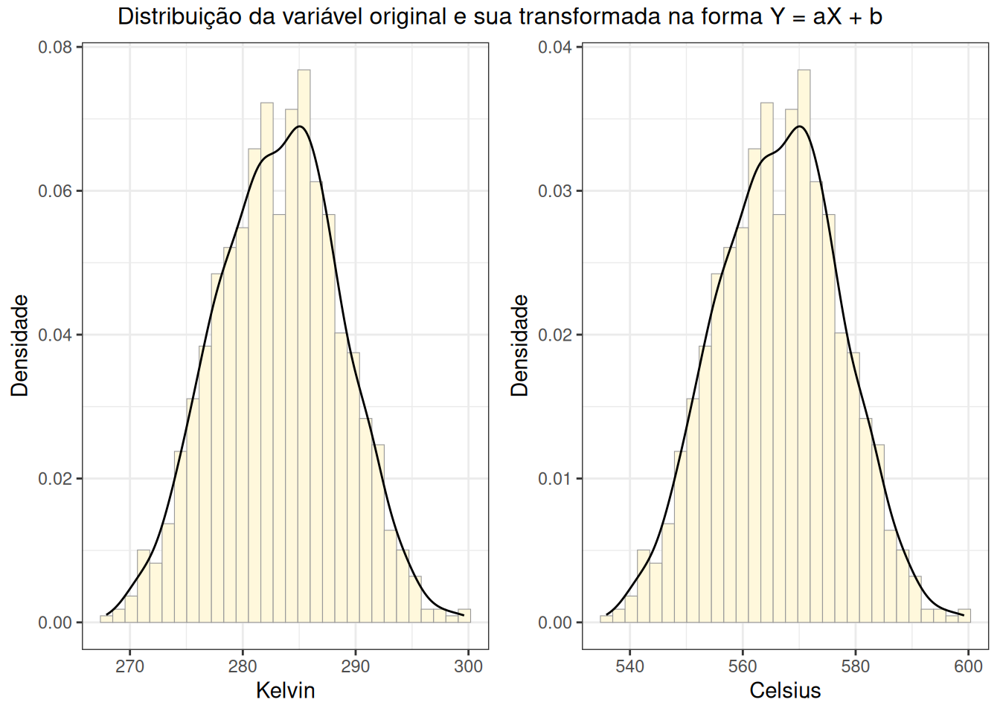

Relatório do primeiro treinamento onde foi apresentado uma introdução ao R e os conceitos de tipos de variáveis e escalas.
Palavras-chave
statistical analysis
1 Fundamentos de R para análise de dados
1.1 Conhecimentos básicos de R
1.1.1 Instalação do R e RStudio
R é uma linguagem para computação estatística, enquanto RStudio é um ambiente de desenvolvimento integrado (IDE) que facilita o trabalho. Ou seja, o R é quem faz o trabalho pesado e o RStudio é uma das várias maneiras de se usar o R com menos esforço.
Processo de instalação: 1. Baixe o R em: https://cran.r-project.org/ 2. Baixe o RStudio em: https://posit.co/products/open-source/rstudio/?sid=1 3. Siga os passos de instalação de cada um deles em suas próprias páginas.
1.1.2 Sintaxe Básica
Imagine que você vai ler um artigo. Você imprime esse documento e inicia sua leitura, mas começa sentir sono e resolve parar e ir tomar um café. Quando você retorna para continuar sua leitura, seu artigo sumiu! Pior que isso, você também esqueceu onde havia parado de ler!
Então você precisa novamente imprimir o documento e iniciar sua leitura novamente. Agora imagine que isso acontece a cada vez que para de ler e se distancia do seu documento. Seria um sofrimento ler qualquer artigo, uma vez que sempre seria necessário imprimir e ler o documento de uma vez.
O mesmo ocorre na análise de dados e computação em geral, nós queremos ter uma forma de ler ou registrar um dado e depois poder retornar a usá-lo sem grandes problemas. Para isso usamos variáveis (que não é a mesma variável da estatística). Então, no R, uma variável representa um nome associado a um dado gravado na memória. Por ser somente um nome, não há restrições para o que ele nomeia (o tipo de dado), somente não se aceita que ele seja um nome feio, que usa caractéres proibidos (numeros no início, “$”“,”.”, “,”).
Mostrar código
# | label: creating_variables# para criar comentários comece a linha com ## esses comentários são desconsiderados pelo interpretador do R (não processados)# forma de atribuição mais comumx <-10# forma menos comumy =20# Atribuição reversa - para aqueles que vivem no Upside Down30-> z# R é case-sensitive (diferencia maiusculas de minusculas)Var1 <-5var1 <-10# Boas práticas para nomear variável# Nunca:# - Começar com números: 2var (incorreto)# - Usar espaços ou carácteres especiais: minha variavel (incorreto)# - Usar palavras reservadas: mean, if, for# Use nomes descritivos, quem lê seu código não sabe o que você pensoup_valor_teste_t <-0.032ic_95_inferior <-12.3ic_95_superior <-18.7
# | label: data_types_charactertratamento <-"vacina"# c() é um vetor (agrupamento de dados atômicos)grupo <-c("controle", "tratado", "placebo")# "character"class(tratamento)
# Operações vetorizadas são realizadas elemento por elementox <-c( 1, 2, 3, 4, 5)y <-c(10, 20, 30, 40, 50)x + y
[1] 11 22 33 44 55
Mostrar código
x *2
[1] 2 4 6 8 10
Mostrar código
x^2
[1] 1 4 9 16 25
Mostrar código
sqrt(x)
[1] 1.000000 1.414214 1.732051 2.000000 2.236068
Mostrar código
# Operações em vetores de tamanho diferente# Cuidado! porque ocorre reciclagem do menor vetorc(1, 2, 3) +c(10, 20)
Warning in c(1, 2, 3) + c(10, 20): comprimento do objeto maior não é múltiplo
do comprimento do objeto menor
[1] 11 22 13
1.1.5 Funções Básicas
Funções possuem um padrão nome_da_funcao(argumento1, argumento2, …). Ela é um bloco de código com uma finalidade específica, que abstrai a complexidade de como é feito algo para quem a usa. Então, por exemplo, se uso uma função media(x), eu não preciso saber o “como” e somente o que ela faz (calcula a média de um grupo de elementos em x).
Funções também são úteis quando repetimos um bloco de código em vários momentos de uma análise, pois, podemos definir uma função para executar esse bloco de código uma vez e depois só executá-la (princípio DRY).
Estruturas bidimensionais com elementos do mesmo tipo.
Mostrar código
# | label: matrices# Criação de matrizesmatriz1 <-matrix(1:12, nrow=3, ncol=4)matriz2 <-matrix(1:12, nrow=3, ncol=4, byrow=TRUE)# Matriz de correlaçãodados <-matrix(rnorm(100), ncol=5)cor_matrix <-cor(dados)# Operações matriciaisA <-matrix(c(1,2,3,4), nrow=2)B <-matrix(c(5,6,7,8), nrow=2)A + B # Soma elemento por elemento
[,1] [,2]
[1,] 6 10
[2,] 8 12
Mostrar código
A * B # Multiplicação elemento por elemento
[,1] [,2]
[1,] 5 21
[2,] 12 32
Mostrar código
A %*% B # Multiplicação matricial verdadeira
[,1] [,2]
[1,] 23 31
[2,] 34 46
Mostrar código
t(A) # Transposta
[,1] [,2]
[1,] 1 2
[2,] 3 4
Mostrar código
solve(A) # Inversa (se existir)
[,1] [,2]
[1,] -2 1.5
[2,] 1 -0.5
Mostrar código
det(A) # Determinante
[1] -2
Mostrar código
# Dimensõesdim(A)
[1] 2 2
Mostrar código
nrow(A)
[1] 2
Mostrar código
ncol(A)
[1] 2
1.2.2 Data Frames
São basicamente tabelas com colunas de variados tipos em que cada linha representa um registro (planilha do excel). É o principal tipo de dado com que trabalhamos na prática. Todas as colunas no data.frame devem apresentar o mesmo tamanho.
'data.frame': 5 obs. of 5 variables:
$ id : int 1 2 3 4 5
$ tratamento : chr "A" "B" "A" "B" ...
$ peso_inicial: num 65.2 70.1 68.5 72.3 66.8
$ peso_final : num 68.1 71.5 71.2 73.8 69.5
$ melhorou : logi TRUE TRUE TRUE TRUE NA
Mostrar código
summary(df) # Resumo estatístico simples de cada coluna
id tratamento peso_inicial peso_final melhorou
Min. :1 Length:5 Min. :65.20 Min. :68.10 Mode:logical
1st Qu.:2 Class :character 1st Qu.:66.80 1st Qu.:69.50 TRUE:4
Median :3 Mode :character Median :68.50 Median :71.20 NA's:1
Mean :3 Mean :68.58 Mean :70.82
3rd Qu.:4 3rd Qu.:70.10 3rd Qu.:71.50
Max. :5 Max. :72.30 Max. :73.80
Mostrar código
head(df) # Primeiras x linhas
id tratamento peso_inicial peso_final melhorou
1 1 A 65.2 68.1 TRUE
2 2 B 70.1 71.5 TRUE
3 3 A 68.5 71.2 TRUE
4 4 B 72.3 73.8 TRUE
5 5 A 66.8 69.5 NA
Mostrar código
tail(df) # Últimas x linhas
id tratamento peso_inicial peso_final melhorou
1 1 A 65.2 68.1 TRUE
2 2 B 70.1 71.5 TRUE
3 3 A 68.5 71.2 TRUE
4 4 B 72.3 73.8 TRUE
5 5 A 66.8 69.5 NA
Mostrar código
# Acessando colunasdf$peso_inicial
[1] 65.2 70.1 68.5 72.3 66.8
Mostrar código
df[["peso_inicial"]]
[1] 65.2 70.1 68.5 72.3 66.8
Mostrar código
df[, "peso_inicial"]
[1] 65.2 70.1 68.5 72.3 66.8
Mostrar código
df[, 3]
[1] 65.2 70.1 68.5 72.3 66.8
Mostrar código
df[c(1, 3), 3]
[1] 65.2 68.5
Mostrar código
# Criando nova variável no data.framedf$ganho_peso <- df$peso_final - df$peso_inicialdf$ganho_percentual <- (df$ganho_peso / df$peso_inicial) *100head(df)
id tratamento peso_inicial peso_final melhorou ganho_peso ganho_percentual
1 1 A 65.2 68.1 TRUE 2.9 4.447853
2 2 B 70.1 71.5 TRUE 1.4 1.997147
3 3 A 68.5 71.2 TRUE 2.7 3.941606
4 4 B 72.3 73.8 TRUE 1.5 2.074689
5 5 A 66.8 69.5 NA 2.7 4.041916
1.2.3 Listas
Estruturas mais flexíveis - podem conter elementos de tipos e tamanhos diferentes.
Mostrar código
# | label: lists# Lista com resultados de uma análise estatísticaresultado_teste <-list(nome_teste ="Teste t de Student",estatistica_t =2.453,graus_liberdade =48,p_valor =0.018,intervalo_confianca =c(1.23, 5.67),dados_originais = df,matriz_cov =matrix(rnorm(9), 3, 3))# Acessando elementosresultado_teste$p_valor
n <-1000dados_epi <-data.frame(Sexo =sample(c("M", "F"), n, replace =TRUE),Idade =sample(c("0-20", "21-40", "41-60", "60+"), n, replace =TRUE),Exposicao =sample(c("Sim", "Não"), n, replace =TRUE, prob =c(0.3, 0.7)),Doenca =sample(c("Presente", "Ausente"), n, replace =TRUE, prob =c(0.1, 0.9)))tabela_4d <-table(dados_epi)print(dim(tabela_4d)) # 2 x 4 x 2 x 2
[1] 2 4 2 2
Mostrar código
# Análise de odds ratio estratificadofor(sexo inc("M", "F")) {for(idade inunique(dados_epi$Idade)) { subtabela <- tabela_4d[sexo, idade, , ]if(all(subtabela >0)) {#| | desfecho: Sim | desfecho: Não |#|----------------|----------------|---------------|#| preditor: Sim | A | B |#| preditor: Não | C | D |# OR = a*d/b*c OR <- (subtabela[2,2] * subtabela[1,1]) / (subtabela[2,1] * subtabela[1,2])cat(sprintf("OR para %s, %s: %.2f\n", sexo, idade, OR)) } }}
OR para M, 60+: 2.27
OR para M, 0-20: 1.50
OR para M, 21-40: 2.24
OR para F, 60+: 1.84
OR para F, 0-20: 1.09
OR para F, 21-40: 1.23
OR para F, 41-60: 0.76
id tratamento peso_inicial peso_final melhorou ganho_peso ganho_percentual
2 2 B 70.1 71.5 TRUE 1.4 1.997147
grupo
2 B
Mostrar código
df[, "peso_inicial"]
[1] 65.2 70.1 68.5 72.3 66.8
Mostrar código
df$peso_inicial
[1] 65.2 70.1 68.5 72.3 66.8
Mostrar código
df[df$tratamento =="A", ]
id tratamento peso_inicial peso_final melhorou ganho_peso ganho_percentual
1 1 A 65.2 68.1 TRUE 2.9 4.447853
3 3 A 68.5 71.2 TRUE 2.7 3.941606
grupo
1 A
3 A
2 Tipos de variáveis e escalas de mensuração e precisão
2.1 Tipos de variáveis
Variável é uma característica em estudo em uma população (ou amostra) que pode ser medida, contada ou categorizada. O tipo influencia na escolha de estatísticas descritivas, gráficos e métodos de análise que serão adotados para analisar os dados. Assim, vamos começar nosso estudo pela classificação das variáveis relativa ao fato de serem mensuradas ou categorizadas, bem como as escalas de mensuração.
Em geral, variáveis são classificadas como métricas e não métricas. Variáveis não métricas ou qualitativas são características registradas dentro de um número finito de categorias, em que o indivíduo possui ou não determinada categoria em análise (ex. sexo). Variáveis métricas ou quantitivas são contadas ou mensuradas (nesse caso não há ausência de determinada característica, embora ele possa apresentar 0 dela).
flowchart TB
A["Tipos de variáveis"]
A --> B["Não métricas (qualitativas)"]
A --> C["Métricas (quantitativas)"]
Tipos de variáveis.
2.1.1 Variáveis Não Métricas (Qualitativas)
Representam características, atributos ou qualidades que não podem ser medidas numericamente de forma intrínseca. Normalmente, são apresentadas na análise em tabelas de frequência, sem medidas de posição, dispersão ou forma. Uma medida que pode ser associada é a moda, valor ou categoria mais frequente.
Características principais:
Representam categorias ou classes
Não admitem operações aritméticas significativas
Podem ser codificadas numericamente, mas os números são apenas rótulos
Exemplos: A) Raça de animais (Holandesa, Jersey, Angus); B) Diagnóstico clínico (positivo, negativo); C) Coloração de pelagem (preto, branco, malhado).
2.1.2 Variáveis Métricas (Quantitativas)
Representam quantidades mensuráveis ou que são contadas. Permitem maior gama de possibilidades gráficas (gráficos de linhas, dispersão, histograma, boxplot…), medidas de posição, dispersão e forma.
Podem ser discretas, quando assumem um conjunto finito ou enumerável de valores, ou contínuas, quando os valores estão em um intervalo de números reais (em tese, assumem infinitos valores dentro do intervalo).
Exemplos: A) Peso corporal (kg); B) Contagem de leucócitos (células/μL); C) Produção de leite (litros/dia); D) número de filhos.
2.2 Escalas de mensuração (Stevens, 1946)
Mensuração é o ato de atribuir números ou rótulos a um indíviduo de acordo com regras específicas para representar quantidades ou qualidades de um atributo (a variável em estudo). A escala é o conjunto de possíveis valores que o atributo poderá assumir, considerando a regra de mensuração.
Existem várias classificações de tipos de escala, mas vamos usar a de Stevens (1946), pela simplicidade e amplo uso.
flowchart TB
A["Variável qualitativa"]
A --> B["Escala Nominal"]
A --> C["Escala Ordinal"]
D[Variável quantitativa]
D --> E["Escala intervalar"]
D --> F["Escala Razão"]
Tipos de escalas.
2.2.1 Escala Nominal (Variáveis Não Métricas)
É a mais básica das escalas, onde números ou símbolos servem apenas para identificar e classificar. Não estabelece relações de orgem ou grandeza. Possibilita contar o número de elementos em cada categoria e testar hipóteses sobre a distribuição de unidades dentro das categorias, mas medidas de posição, dispersão e forma não fazem muito sentido para ela.
Exemplos:
Tipo sanguíneo: A, B, AB, O
Sexo: M=Macho, F=Fêmea
Diagnóstico de LVC: 0=Negativo, 1=Positivo
Espécie animal: 1=Bovino, 2=Suíno, 3=Equino
País de Origem: Brasil, Bolívia, Peru, Canadá, ...
Propriedades matemáticas:
Equivalência (=, ≠)
Não há ordenação intrínseca
Ferramentas ou medidas para caracterização dos dados:
Tabelas de frequência
Gráficos de barras ou setores
Contagem de frequências, moda
Análise estatística possível:
Teste qui-quadrado (\(\chi^{2}\))
Coeficiente de contingência (\(CC\))
\(V\) de Cramér
2.2.2 Escala Ordinal (Variáveis Não Métricas)
Ainda classifica o atributo em classes ou categorias, mas existe uma relação inerente de ordem entre as diferentes categorias, mesmo que as distâncias entre categorias não sejam necessariamente iguais. Por exemplo, a idade dos indivíduos sendo mensurada nas faixas etárias jovem (15 a 21 anos), adulto (22 a 65 anos), idoso (mais que 65 anos). Embora, exista uma ordem entre as faixas (idoso > adulto > jovem, na idade), o intervalo entre cada classe não é igual, ou seja, não faz sentido eu pensar em algo como “1 idoso = 3 jovem anos”.
Ferramentas ou medidas para caracterização dos dados:
Tabelas de frequência
Gráficos de barras ou setores
Contagem de frequências, moda, mediana, percentis, correlação de Spearman
Análise estatística possível:
Teste de Mann-Whitney \(U\)
Teste de Kruskal-Wallis
Correlação de postos de Spearman (\(\rho\) de Spearman)
Correlação de postos de Kendall (\(\tau\) de Kendall)
2.2.3 Escala Intervalar (Variável Quantitativa)
Além de haver ordenação, possui intervalos iguais entre valores, ou seja, unidade de medida constante. Porém, o zero da escala é arbitrário (não representa ausência absoluta). Assim, conseguimos calcular a diferença entre dois valores mensurados, mas não podemos inferir que um seja múltiplo do outro.
Exemplos:
Temperatura em Celsius: 0°C é arbitrário
Calendário: ano 0 é convenção
Escores padronizados (z-score): média=0 por construção
Propriedades matemáticas:
Relações de ordem e equivalência (<, >, =)
Permite inferir diferença
Razões não têm significado
Se X está em escala intervalar, então:
Y = a + bX também está em escala intervalar
A razão X₁/X₂ não é invariante sob transformação linear
Mostrar código
# peso em quilos ou gramasx1 =10# 10 kgx2 =100# 100 kgx2 / x1
Ferramentas ou medidas para caracterização dos dados:
Gráficos de linhas, dispersão, histograma, boxplot
Média, desvio-padrão, mediana, percentis, correlação (com os devidos cuidados)
Mostrar código
x <-rnorm(1000, mean=283.15, sd=5.15) # aproximadamente 20°Cmean(x)
[1] 283.1221
Mostrar código
sd(x)
[1] 5.17091
Mostrar código
sd(x) /mean(x) *100
[1] 1.826389
Mostrar código
y = x -273.15mean(y)
[1] 9.972074
Mostrar código
sd(y)
[1] 5.17091
Mostrar código
sd(y) /mean(y) *100
[1] 51.8539
Mostrar código
y = x*2mean(y)
[1] 566.2441
Mostrar código
sd(y)
[1] 10.34182
Mostrar código
sd(y) /mean(y) *100
[1] 1.826389
Mostrar código
require(tidyverse)require(gridExtra)temperatures <-tibble(kelvin = x, celsius = y)k_plot <-ggplot(data = temperatures, aes(x=kelvin, y = ..density..)) +geom_histogram(fill ="cornsilk", colour ="grey60", size = .2) +geom_density() +labs(x ="Kelvin",y ="Densidade" ) +theme_bw()c_plot <-ggplot(data = temperatures, aes(x=celsius, y = ..density..)) +geom_histogram(fill ="cornsilk", colour ="grey60", size = .2) +geom_density() +labs(x ="Celsius",y ="Densidade" ) +theme_bw()marrangeGrob(list(k_plot, c_plot),ncol =2, nrow =1,top ="Distribuição da variável original e sua transformada na forma Y = aX + b")

Distribuição de uma variável na escala razão e sua transformada nas escalar intervalar.
Análise estatística possível:
Testes paramétricos ou não-paramétricos
Coeficiente de correlação de Pearson (\(\rho\) de Pearson)
2.2.4 Escala de Razão (Variável Quantitativa)
Possui todas as propriedades da escala intervalar, mais um zero absoluto significativo.
Exemplos:
Peso: 0 kg = ausência de massa
Contagem: 0 células = nenhuma célula
Concentração: 0 mg/dL = ausência da substância
Tempo de reação: 0 segundos = instantâneo
Propriedades matemáticas:
Zero representa ausência completa
Relações de ordem e equivalência (<, >, =)
Permite inferir diferença e razão
Todas as operações aritméticas são válidas (+, -, *, /)
Operações permitidas: média, desvio padrão, correlação de Pearson
Ferramentas ou medidas para caracterização dos dados:
Gráficos de linhas, dispersão, histograma, boxplot
Média, desvio-padrão, coeficiente de variação, mediana, percentis, correlação
Análise estatística possível:
Testes paramétricos ou não-paramétricos
Coeficiente de correlação de Pearson (\(\rho\) de Pearson)
Tabela resumo do efeito da transformação linear nas propriedades das variáveis quantitativas
Propriedade
Transformação Linear Positiva (Y=a+bX, b>0 e a>0)
Transformação de Proporção (Y=bX, b>0 e a=0)
Ordem (X₁ < X₂)
Invariante
Invariante
Diferenças
Não invariante (multiplicadas por b)
Não invariante
Razões de diferenças
Invariante
Invariante
Razões diretas (X₁/X₂)
Não invariante
Invariante
Correlação
Invariante
Invariante
Média
Não invariante
Não invariante
CV
Não invariante
Invariante
Invariante significa que determinada propriedade permanece inalterada após a transformação.
Em termos matemáticos:
Dada uma propriedade \(P(X)\) de uma variável \(X\)
e uma transformação \(T\) de \(X\) em uma variável \(Y\): \(X \rightarrow Y = T(X)\)
\(P\) é invariante sob \(T\) se: \(P(X) = P(Y)\)
2.3 Número de categorias e pecisão
Variáveis qualitativas podem ser classificadas em dicotômicas quando apresentam apenas duas categorias ou policotômicas quando possuem mais que duas categorias. Já as variáveis quantitativas podem ser classificadas conforme a escala de precisão em discretas ou contínuas.
flowchart TB
A["Variável qualitativa"]
A --> B["Dicotômica ou binária"]
A --> C["Policotômica"]
D[Variável quantitativa]
D --> E["Discreta"]
D --> F["Contínua"]
Tipos de escalas.
2.3.1 Variável Dicotômica ou Binária (Dummy)
Variável com exatamente duas categorias mutuamente exclusivas. Nas variáveis dummy, uma categoria indica a presença de determinada característica e a outra a ausência.
Representação matemática:
X = {0, 1} ou X = {Sim, Não}
P(X=1) = p, P(X=0) = 1-p
Propriedades estatísticas:
\(E[X] = p\)
\(Var(X) = p(1-p)\)
Distribuição: \(X \sim Bernoulli(p)\)
Exemplos:
Presença/ausência de doença
Vacinado/não vacinado
Tratamento/controle
2.3.2 Variável Policotômica
Variável categórica com três ou mais categorias.
Tipos:
Nominal policotômica: sem ordem (raça, região)
Ordinal policotômica: com ordem (estágio da doença: I, II, III)
Uma variável qualitativa com \(n\) categorias pode ser representada por \(n-1\) variáveis dummies (dicotômicas).
Estágio da doença
D1
D2
Estágio I
0
0
Estágio II
0
1
Estágio III
1
0
2.3.3 Variável Quantitativa Discreta
Assume valores em um conjunto enumerável (geralmente inteiros), geralmente finito (“infinito somente nos extremos”).
\(Binomial(n,p)\): número de sucessos em n tentativas
Binomial Negativa, \(BinNeg(n,p)\): número de falhas até o fim do experimento
Exemplos:
Número de crias: 0, 1, 2, 3, ...
Contagem de parasitas: valores inteiros ≥ 0
Número de tratamentos: 1, 2, 3, ...
2.3.4 Variável Quantitativa Contínua
Pode assumir qualquer valor em um intervalo dos reais (infinitos valores dentro do intervalo).
Características:
Resultado de medição
Infinitos valores possíveis em qualquer intervalo
Função densidade de probabilidade: \(f(x)\)
\(f(x) > 0\)
\(\int f(x)dx = 1\)
a probabilidade de \(X\) assumir valores dentro de um intervalo \([a, b]\) é justamente a área sob a curva de \(f(x)\) limitada pelos pontos \(a\) e \(b\), logo, \(P(a \leq X \leq b) = \int_{a}^{b} f(x)dx\)
\(E[X] = \int_{-\infty}^{+\infty} xf(x)dx\)
Distribuições comuns:
\(Normal(\mu, \sigma^2)\): muitos fenômenos naturais
\(Exponencial(\lambda)\): tempo entre eventos
\(Gamma(\alpha, \beta)\): tempos de espera, concentrações
Exemplos:
Peso corporal: qualquer valor positivo real
Glicemia: valores contínuos em mg/dL
Produção de leite: litros com precisão decimal
2.3.5 Implicações práticas do tipo de variável na análise estatística
Testes de hipótese
Nominal: Qui-quadrado, Teste Exato de Fisher, Coeficiente de associação
Ordinal: Mann-Whitney, Kruskal-Wallis, Coeficiente de correlação de Spearman
Quantitativa: Correlação de Pearson, Teste t, ANOVA (se normal), Correlação de Spearman, Mann-Whitney, Kruskal-Wallis (se não normal)
Modelagem Estatística
Binária: Regressão Logística
Policotômica: Regressão Multinomial
Ordinal: Regressão Ordinal (Proportional Odds)
Contagem: Regressão Poisson/Binomial Negativa
Contínua: Regressão Linear (se normal)
Cuidados na Interpretação
Não tratar ordinal como quantitativa: A média de escores 1, 2, 3 pode não ter significado
Verificar escala antes de calcular razões: 20°C não é “duas vezes mais quente” que 10°C
Considerar a precisão da medida: Uma balança com precisão de 1kg torna o peso discreto na prática
@online{teixeira_paiva2025,
author = {Teixeira Paiva, Marcelo},
title = {Café com estatística e R},
volume = {1},
number = {1},
date = {2025-09-29},
langid = {pt-BR},
abstract = {Relatório do primeiro treinamento onde foi apresentado uma
introdução ao R e os conceitos de tipos de variáveis e escalas.}
}
Por favor, cite este trabalho como:
Teixeira Paiva, Marcelo. 2025. “Café com estatística e R.”
Café com estatística e R: Treinamento 1 - Tipos de variáveis, escalas e
uma introdução ao R. September 29, 2025.
Código fonte
---title: "Café com estatística e R"subtitle: "Treinamento 1 - Tipos de variáveis, escalas e uma introdução ao R"date: last-modifiedauthor: - name: Marcelo Teixeira Paiva orcid: 0000-0001-6334-073X email: marcelo_thelin@hotmail.com affiliation: - name: CRMV-MG city: Belo Horizonte state: MG country: Brazil url: portal.crmvmg.gov.brabstract: > Relatório do primeiro treinamento onde foi apresentado uma introdução ao R e os conceitos de tipos de variáveis e escalas.keywords: - statistical analysislicense: "CC BY"copyright: holder: Marcelo Paiva year: 2025citation: container-title: "Café com estatística e R: Treinamento 1 - Tipos de variáveis, escalas e uma introdução ao R" volume: 1 issue: 1funding: "The author received no specific funding for this work."lang: pt-BRtoc: truetoc-depth: 4toc-expand: truetoc-title: "Índice"number-sections: trueformat: html: code-fold: true code-summary: "Mostrar código" code-tools: true highlight-style: ayu-mirage code-line-numbers: true theme: light: journal dark: superhero fontsize: 1.1em linestretch: 1.7 max-width: 1800px margin: 1rem pdf: documentclass: report lof: true lot: true geometry: - top=30mm - left=20mm - heightrounded colorlinks: true---# Fundamentos de R para análise de dados## Conhecimentos básicos de R### Instalação do R e RStudio**R** é uma linguagem para computação estatística, enquanto **RStudio** é um ambiente de desenvolvimento integrado (IDE) que facilita o trabalho. Ou seja, o R é quem faz o trabalho pesado e o RStudio é uma das várias maneiras de se usar o R com menos esforço.**Processo de instalação:**1. Baixe o R em: https://cran.r-project.org/2. Baixe o RStudio em: https://posit.co/products/open-source/rstudio/?sid=13. Siga os passos de instalação de cada um deles em suas próprias páginas.### Sintaxe BásicaImagine que você vai ler um artigo. Você imprime esse documento e inicia sua leitura, mas começa sentir sono e resolve parar e ir tomar um café. Quando você retorna para continuar sua leitura, seu artigo sumiu! Pior que isso, você também esqueceu onde havia parado de ler!Então você precisa novamente imprimir o documento e iniciar sua leitura novamente. Agora imagine que isso acontece a cada vez que para de ler e se distancia do seu documento. Seria um sofrimento ler qualquer artigo, uma vez que sempre seria necessário imprimir e ler o documento de uma vez.O mesmo ocorre na análise de dados e computação em geral, nós queremos ter uma forma de ler ou registrar um dado e depois poder retornar a usá-lo sem grandes problemas. Para isso usamos variáveis (que não é a mesma variável da estatística). Então, no R, uma variável representa um nome associado a um dado gravado na memória. Por ser somente um nome, não há restrições para o que ele nomeia (o tipo de dado), somente não se aceita que ele seja um nome feio, que usa caractéres proibidos (numeros no início, "$"", ".", ",").```{r}# | label: creating_variables# para criar comentários comece a linha com ## esses comentários são desconsiderados pelo interpretador do R (não processados)# forma de atribuição mais comumx <-10# forma menos comumy =20# Atribuição reversa - para aqueles que vivem no Upside Down30-> z# R é case-sensitive (diferencia maiusculas de minusculas)Var1 <-5var1 <-10# Boas práticas para nomear variável# Nunca:# - Começar com números: 2var (incorreto)# - Usar espaços ou carácteres especiais: minha variavel (incorreto)# - Usar palavras reservadas: mean, if, for# Use nomes descritivos, quem lê seu código não sabe o que você pensoup_valor_teste_t <-0.032ic_95_inferior <-12.3ic_95_superior <-18.7```### Tipos de Dados**Numeric (double/integer):**```{r}# | label: data_types_numeric# Números reais (padrão)altura <-1.75peso <-68.5# "numeric"class(altura)class(1)# Inteiros (com L)n_amostras <-100L# "integer"class(n_amostras)```**Character (texto):**```{r}# | label: data_types_charactertratamento <-"vacina"# c() é um vetor (agrupamento de dados atômicos)grupo <-c("controle", "tratado", "placebo")# "character"class(tratamento)```**Logical (booleano, verdadeiro/falso):**```{r}# | label: data_types_logicalsignificativo <-TRUEhipotese_nula <-FALSEp_valor <-0.01# operações lógicas: Retorna TRUE ou FALSEp_valor <0.05class(hipotese_nula)```### Vetores e Operações BásicasOs vetores são a estrutura fundamental do R. **Tudo é vetor em sua essência**!```{r}# | label: data_types_vector# Como criar vetoresdados <-c(23, 45, 12, 67, 34)sequencia <-1:10seq_regular <-seq(0, 1, by=0.1)repeticao <-rep(c(0,1), times=5)# vetor nomeadoidades <-c(fulano=21, cicrano=43)names(idades)# Operações vetorizadas são realizadas elemento por elementox <-c( 1, 2, 3, 4, 5)y <-c(10, 20, 30, 40, 50)x + yx *2x^2sqrt(x)# Operações em vetores de tamanho diferente# Cuidado! porque ocorre reciclagem do menor vetorc(1, 2, 3) +c(10, 20)```### Funções BásicasFunções possuem um padrão nome_da_funcao(argumento1, argumento2, ...). Ela é um bloco de código com uma finalidade específica, que abstrai a complexidade de como é feito algo para quem a usa. Então, por exemplo, se uso uma função media(x), eu não preciso saber o "como" e somente o que ela faz (calcula a média de um grupo de elementos em x).Funções também são úteis quando repetimos um bloco de código em vários momentos de uma análise, pois, podemos definir uma função para executar esse bloco de código uma vez e depois só executá-la (princípio DRY).```{r}# | label: functions_basicdados <-c(23, 45, 12, 67, 34, 28, 51)# funções do dia-a-diasum(dados) # Somamean(dados) # Média aritméticamedian(dados) # Medianavar(dados) # Variância amostral (n-1)sd(dados) # Desvio padrãomin(dados) # Mínimomax(dados) # Máximorange(dados) # Min e Maxquantile(dados) # Quartissummary(dados) # Resumo estatístico# Outras funções úteis# Tamanho do vetorlength(dados)# Ordenaçãosort(dados, decreasing =FALSE)# Valores únicosunique(dados)# Tabela de frequênciasdados <-c(rep("a", 2), rep("b", 4), rep("c", 8), rep("d", 1))table(dados)prop.table(table(dados))```### Operadores Aritméticos e Lógicos**Operadores Aritméticos:**```{r}# | label: arithmetics_operations# Básicos10+5# Adição10-5# Subtração10*5# Multiplicação10/5# Divisão10^2# Potenciação10**2# Potenciação10%%3# Módulo (resto): 110%/%3# Divisão inteira: 3amostra <-sample(0:200, 1e6, replace =TRUE)media <-sum(amostra) /length(amostra)variancia <-sum((amostra -mean(amostra))^2) / (length(amostra) -1)```**Operadores Lógicos:**```{r}# | label: boolean_operations# Comparação5>3# maior5<3# menor5>=3# maior ou igual5<=3# menor ou igual5==3# igual5!=3# diferente"a"=="b"# Operadores booleanosp <-TRUEq <-FALSE# operação conectivo!p # NEGAÇÂOp & q # E - conjunção (só é V em VV)p | q # OU - disjunção inclusiva (só é F em FF)xor(p, q) # OU OU - disjunção exclusiva (é F sempre que iguais - VV, FF)!p | q # equivalente à condicional(!p | q) & (!q | p) # equivalente à bicondicional10<12&12>5# short circuit evaluation10>12&& nao_existo10<12|| nao_existo# Vetorizaçãoidades <-c(18, 25, 30, 17, 22)idades >=18```## Estruturas de dados### MatrizesEstruturas bidimensionais com elementos do **mesmo tipo**.```{r}# | label: matrices# Criação de matrizesmatriz1 <-matrix(1:12, nrow=3, ncol=4)matriz2 <-matrix(1:12, nrow=3, ncol=4, byrow=TRUE)# Matriz de correlaçãodados <-matrix(rnorm(100), ncol=5)cor_matrix <-cor(dados)# Operações matriciaisA <-matrix(c(1,2,3,4), nrow=2)B <-matrix(c(5,6,7,8), nrow=2)A + B # Soma elemento por elementoA * B # Multiplicação elemento por elementoA %*% B # Multiplicação matricial verdadeirat(A) # Transpostasolve(A) # Inversa (se existir)det(A) # Determinante# Dimensõesdim(A)nrow(A)ncol(A)```### Data FramesSão basicamente tabelas com colunas de **variados tipos** em que cada linha representa um registro (planilha do excel). É o principal tipo de dado com que trabalhamos na prática. Todas as colunas no `data.frame` devem apresentar o mesmo tamanho.```{r}# | label: data_frames# Criaçãodf <-data.frame(id =1:5,tratamento =c("A", "B", "A", "B", "A"),peso_inicial =c(65.2, 70.1, 68.5, 72.3, 66.8),peso_final =c(68.1, 71.5, 71.2, 73.8, 69.5),melhorou =c(TRUE, TRUE, TRUE, TRUE, NA))# Estrutura e resumostr(df) # Estrutura do data.framesummary(df) # Resumo estatístico simples de cada colunahead(df) # Primeiras x linhastail(df) # Últimas x linhas# Acessando colunasdf$peso_inicialdf[["peso_inicial"]]df[, "peso_inicial"]df[, 3]df[c(1, 3), 3]# Criando nova variável no data.framedf$ganho_peso <- df$peso_final - df$peso_inicialdf$ganho_percentual <- (df$ganho_peso / df$peso_inicial) *100head(df)```### ListasEstruturas mais flexíveis - podem conter elementos de **tipos e tamanhos diferentes**.```{r}# | label: lists# Lista com resultados de uma análise estatísticaresultado_teste <-list(nome_teste ="Teste t de Student",estatistica_t =2.453,graus_liberdade =48,p_valor =0.018,intervalo_confianca =c(1.23, 5.67),dados_originais = df,matriz_cov =matrix(rnorm(9), 3, 3))# Acessando elementosresultado_teste$p_valorresultado_teste[["p_valor"]]resultado_teste[[4]]teste_t <-t.test(df$peso_final, df$peso_inicial, paired=TRUE)str(teste_t)names(teste_t)```### FatoresVariáveis categóricas com níveis fixos - essencial para modelos estatísticos.```{r}# | label: factors# Criação de fatoressexo <-factor(c("M", "F", "F", "M", "F"), levels =c("M", "F"))levels(sexo)# Recodificaçãolevels(sexo) <-c("Masculino", "Feminino")# Fator ordenadoeducacao <-factor(c("Médio", "Superior", "Fundamental", "Superior", "Médio"),levels =c("Fundamental", "Médio", "Superior"),ordered =TRUE)as.integer((educacao))# GLMs e ANOVA tratam fatores como dummies ou como variáveis discretasdf$tratamento[5] <-"C"df$grupo <- df$tratamentolm(peso_final ~ grupo, data=df)df$grupo <-factor(df$tratamento)lm(peso_final ~ grupo, data=df)df$grupo <-factor(df$tratamento, ordered =TRUE)lm(peso_final ~ grupo, data=df)```### ArraysGeneralizações de matrizes para **múltiplas dimensões**.```{r}# | label: arrays# Array de 3 dimensões (exemplo: medidas x indivíduos x tempo)n_pacientes <-5n_tempos <-3peso_inicial <-rnorm(n_pacientes, mean =70, sd =5)altura_inicial <-rnorm(n_pacientes, mean =170, sd =10)idade_inicial <-rpois(n_pacientes, lambda =23)# matriz vaziapeso_tempo <-matrix(nrow = n_pacientes, ncol = n_tempos)altura_tempo <-matrix(nrow = n_pacientes, ncol = n_tempos)idade_tempo <-matrix(nrow = n_pacientes, ncol = n_tempos)for(i in1:n_pacientes) { peso_tempo[i, ] <- peso_inicial[i] +cumsum(c(0, rnorm(n_tempos-1, mean=0.5, sd=1))) altura_tempo[i, ] <- altura_inicial[i] +rnorm(n_tempos, mean=0, sd=0.5) idade_tempo[i, ] <- idade_inicial[i] +c(0, 0.25, 0.5)}imc_tempo <- peso_tempo / (altura_tempo/100)^2medidas_tempo <-array(c(t(peso_tempo), t(altura_tempo), t(imc_tempo), t(idade_tempo)),dim =c(n_pacientes, n_tempos, 4),dimnames =list(paste("Paciente", 1:5),c("Mês_0", "Mês_3", "Mês_6"),c("Peso", "Altura", "IMC", "Idade") ))medidas_tempo[1, , ] # paciente 1medidas_tempo[, , 4] # idademedidas_tempo[, 2, ] # mes 2n <-1000dados_epi <-data.frame(Sexo =sample(c("M", "F"), n, replace =TRUE),Idade =sample(c("0-20", "21-40", "41-60", "60+"), n, replace =TRUE),Exposicao =sample(c("Sim", "Não"), n, replace =TRUE, prob =c(0.3, 0.7)),Doenca =sample(c("Presente", "Ausente"), n, replace =TRUE, prob =c(0.1, 0.9)))tabela_4d <-table(dados_epi)print(dim(tabela_4d)) # 2 x 4 x 2 x 2# Análise de odds ratio estratificadofor(sexo inc("M", "F")) {for(idade inunique(dados_epi$Idade)) { subtabela <- tabela_4d[sexo, idade, , ]if(all(subtabela >0)) {#| | desfecho: Sim | desfecho: Não |#|----------------|----------------|---------------|#| preditor: Sim | A | B |#| preditor: Não | C | D |# OR = a*d/b*c OR <- (subtabela[2,2] * subtabela[1,1]) / (subtabela[2,1] * subtabela[1,2])cat(sprintf("OR para %s, %s: %.2f\n", sexo, idade, OR)) } }}```### Indexação e Seleção de Dados```{r}# | label: indexing# VETORESx <-c(10, 20, 30, 40, 50)x[2]x[c(1,3,5)]x[-2]x[x >25]# MATRIZES [linha, coluna]mat <-matrix(1:12, nrow=3)mat[2, 3]mat[2, ]mat[, 3]mat[1:2, 3:4]# DATA FRAMESdf[2, 3]df[2, ]df[, "peso_inicial"]df$peso_inicialdf[df$tratamento =="A", ]df[df$ganho_peso >2& df$tratamento =="A", c("id", "ganho_peso")]# LISTASlista <-list(a=1:5, b=matrix(1:4,2), c="texto")lista[[1]]lista$alista[["b"]]```# Tipos de variáveis e escalas de mensuração e precisão## Tipos de variáveisVariável é uma característica em estudo em uma população (ou amostra) que pode ser **medida, contada ou categorizada**. O tipo influencia na escolha de estatísticas descritivas, gráficos e métodos de análise que serão adotados para analisar os dados. Assim, vamos começar nosso estudo pela classificação das variáveis relativa ao fato de serem mensuradas ou categorizadas, bem como as escalas de mensuração.Em geral, variáveis são classificadas como **métricas e não métricas**. Variáveis não métricas ou qualitativas são características registradas dentro de um número finito de categorias, em que o indivíduo possui ou não determinada categoria em análise (ex. sexo). Variáveis métricas ou quantitivas são contadas ou mensuradas (nesse caso não há ausência de determinada característica, embora ele possa apresentar 0 dela).```{mermaid}%%| label: fig1_diagrama_tipos_variaveis%%| fig-cap: "Tipos de variáveis."flowchart TB A["Tipos de variáveis"] A --> B["Não métricas (qualitativas)"] A --> C["Métricas (quantitativas)"]```### Variáveis Não Métricas (Qualitativas)Representam características, atributos ou qualidades que não podem ser medidas numericamente de forma intrínseca. Normalmente, são apresentadas na análise em tabelas de frequência, sem medidas de posição, dispersão ou forma. Uma medida que pode ser associada é a moda, valor ou categoria mais frequente.**Características principais**:- Representam categorias ou classes- Não admitem operações aritméticas significativas- Podem ser codificadas numericamente, mas os números são apenas rótulos**Exemplos**: A) Raça de animais (Holandesa, Jersey, Angus); B) Diagnóstico clínico (positivo, negativo); C) Coloração de pelagem (preto, branco, malhado).### Variáveis Métricas (Quantitativas)Representam quantidades mensuráveis ou que são contadas. Permitem maior gama de possibilidades gráficas (gráficos de linhas, dispersão, histograma, boxplot...), medidas de posição, dispersão e forma.Podem ser discretas, quando assumem um conjunto finito ou enumerável de valores, ou contínuas, quando os valores estão em um intervalo de números reais (em tese, assumem infinitos valores dentro do intervalo).**Características principais**:- Expressam magnitude ou quantidade- Permitem operações aritméticas (soma, média, etc.)- Possuem unidade de medida (kg, cm, °C, etc.)**Exemplos**: A) Peso corporal (kg); B) Contagem de leucócitos (células/μL); C) Produção de leite (litros/dia); D) número de filhos.## Escalas de mensuração (Stevens, 1946)Mensuração é o ato de atribuir números ou rótulos a um indíviduo de acordo com regras específicas para representar quantidades ou qualidades de um atributo (a variável em estudo). A escala é o conjunto de possíveis valores que o atributo poderá assumir, considerando a regra de mensuração.Existem várias classificações de tipos de escala, mas vamos usar a de Stevens (1946), pela simplicidade e amplo uso.```{mermaid}%%| label: fig2_diagrama_tipos_escalas%%| fig-cap: "Tipos de escalas."flowchart TB A["Variável qualitativa"] A --> B["Escala Nominal"] A --> C["Escala Ordinal"] D[Variável quantitativa] D --> E["Escala intervalar"] D --> F["Escala Razão"]```### Escala Nominal (Variáveis Não Métricas)É a mais básica das escalas, onde números ou símbolos servem apenas para identificar e classificar. Não estabelece relações de orgem ou grandeza. Possibilita contar o número de elementos em cada categoria e testar hipóteses sobre a distribuição de unidades dentro das categorias, mas medidas de posição, dispersão e forma não fazem muito sentido para ela.**Exemplos**:```Tipo sanguíneo: A, B, AB, OSexo: M=Macho, F=FêmeaDiagnóstico de LVC: 0=Negativo, 1=PositivoEspécie animal: 1=Bovino, 2=Suíno, 3=EquinoPaís de Origem: Brasil, Bolívia, Peru, Canadá, ...```**Propriedades matemáticas**:- Equivalência (=, ≠)- Não há ordenação intrínseca**Ferramentas ou medidas para caracterização dos dados**:- Tabelas de frequência- Gráficos de barras ou setores- Contagem de frequências, moda**Análise estatística possível**:- Teste qui-quadrado ($\chi^{2}$)- Coeficiente de contingência ($CC$)- $V$ de Cramér### Escala Ordinal (Variáveis Não Métricas)Ainda classifica o atributo em classes ou categorias, mas existe uma relação inerente de ordem entre as diferentes categorias, mesmo que as distâncias entre categorias não sejam necessariamente iguais. Por exemplo, a idade dos indivíduos sendo mensurada nas faixas etárias jovem (15 a 21 anos), adulto (22 a 65 anos), idoso (mais que 65 anos). Embora, exista uma ordem entre as faixas (idoso > adulto > jovem, na idade), o intervalo entre cada classe não é igual, ou seja, não faz sentido eu pensar em algo como "1 idoso = 3 jovem anos".**Exemplos**:```Escore de condição corporal: 1 (magro) < 2 < 3 < 4 < 5 (obeso)Grau de claudicação: 0 (normal) < 1 (leve) < 2 (moderado) < 3 (severo)Escolaridade: fundamental < médio < superiorEscala Linkert: 1 (Total discordância) < 2 < 3 (Neutro) < 4 < 5 (Total cordância)```**Propriedades matemáticas**:- Relações de ordem e equivalência (<, >, =)- Intervalos entre categorias não são uniformes**Ferramentas ou medidas para caracterização dos dados**:- Tabelas de frequência- Gráficos de barras ou setores- Contagem de frequências, moda, mediana, percentis, correlação de Spearman**Análise estatística possível**:- Teste de Mann-Whitney $U$- Teste de Kruskal-Wallis- Correlação de postos de Spearman ($\rho$ de Spearman)- Correlação de postos de Kendall ($\tau$ de Kendall)### Escala Intervalar (Variável Quantitativa)Além de haver ordenação, possui intervalos iguais entre valores, ou seja, unidade de medida constante. Porém, o zero da escala é arbitrário (não representa ausência absoluta). Assim, conseguimos calcular a diferença entre dois valores mensurados, mas não podemos inferir que um seja múltiplo do outro.**Exemplos**:```Temperatura em Celsius: 0°C é arbitrárioCalendário: ano 0 é convençãoEscores padronizados (z-score): média=0 por construção```**Propriedades matemáticas**:- Relações de ordem e equivalência (<, >, =)- Permite inferir diferença- Razões não têm significado- Se X está em escala intervalar, então: - Y = a + bX também está em escala intervalar - A razão X₁/X₂ não é invariante sob transformação linear```{r}# peso em quilos ou gramasx1 =10# 10 kgx2 =100# 100 kgx2 / x1y1 = x1 *1000# 10000 gy2 = x2 *1000# 100000 gy2 / y1# temperatura em celsius ou fahrenheit (1.8 * C + 32)x1 =10# 10 Cx2 =20# 20 Cx2 / x1y1 =32+ (1.8* x1) # 50 Fy2 =32+ (1.8* x2) # 68 Fy2 / y1x3 =30y3 =32+ (1.8* x3)(x3 - x1) / (x3 - x2) == (y3 - y1) / (y3 - y2)```**Ferramentas ou medidas para caracterização dos dados**:- Gráficos de linhas, dispersão, histograma, boxplot- Média, desvio-padrão, mediana, percentis, correlação (com os devidos cuidados)```{r}x <-rnorm(1000, mean=283.15, sd=5.15) # aproximadamente 20°Cmean(x)sd(x)sd(x) /mean(x) *100y = x -273.15mean(y)sd(y)sd(y) /mean(y) *100y = x*2mean(y)sd(y)sd(y) /mean(y) *100``````{r}#| warning: false#| label: fig3_density_variaveis_escala_intervalar#| fig-cap: "Distribuição de uma variável na escala razão e sua transformada nas escalar intervalar."require(tidyverse)require(gridExtra)temperatures <-tibble(kelvin = x, celsius = y)k_plot <-ggplot(data = temperatures, aes(x=kelvin, y = ..density..)) +geom_histogram(fill ="cornsilk", colour ="grey60", size = .2) +geom_density() +labs(x ="Kelvin",y ="Densidade" ) +theme_bw()c_plot <-ggplot(data = temperatures, aes(x=celsius, y = ..density..)) +geom_histogram(fill ="cornsilk", colour ="grey60", size = .2) +geom_density() +labs(x ="Celsius",y ="Densidade" ) +theme_bw()marrangeGrob(list(k_plot, c_plot),ncol =2, nrow =1,top ="Distribuição da variável original e sua transformada na forma Y = aX + b")```**Análise estatística possível**:- Testes paramétricos ou não-paramétricos- Coeficiente de correlação de Pearson ($\rho$ de Pearson)### Escala de Razão (Variável Quantitativa)Possui todas as propriedades da escala intervalar, mais um zero absoluto significativo.**Exemplos**:```Peso: 0 kg = ausência de massaContagem: 0 células = nenhuma célulaConcentração: 0 mg/dL = ausência da substânciaTempo de reação: 0 segundos = instantâneo```**Propriedades matemáticas**:- Zero representa ausência completa- Relações de ordem e equivalência (<, >, =)- Permite inferir diferença e razão- Todas as operações aritméticas são válidas (+, -, *, /)- Operações permitidas: média, desvio padrão, correlação de Pearson**Ferramentas ou medidas para caracterização dos dados**:- Gráficos de linhas, dispersão, histograma, boxplot- Média, desvio-padrão, coeficiente de variação, mediana, percentis, correlação**Análise estatística possível**:- Testes paramétricos ou não-paramétricos- Coeficiente de correlação de Pearson ($\rho$ de Pearson)**Tabela resumo do efeito da transformação linear nas propriedades das variáveis quantitativas**| Propriedade | Transformação Linear Positiva (Y=a+bX, b>0 e a>0) | Transformação de Proporção (Y=bX, b>0 e a=0) ||------------------------|---------------------------------------------------|----------------------------------------------|| Ordem (X₁ < X₂) | Invariante | Invariante || Diferenças | Não invariante (multiplicadas por b) | Não invariante || Razões de diferenças | Invariante | Invariante || Razões diretas (X₁/X₂) | Não invariante | Invariante || Correlação | Invariante | Invariante || Média | Não invariante | Não invariante || CV | Não invariante | Invariante |Invariante significa que determinada propriedade permanece inalterada após a transformação.Em termos matemáticos:- Dada uma propriedade $P(X)$ de uma variável $X$- e uma transformação $T$ de $X$ em uma variável $Y$: $X \rightarrow Y = T(X)$- $P$ é invariante sob $T$ se: $P(X) = P(Y)$## Número de categorias e pecisãoVariáveis qualitativas podem ser classificadas em dicotômicas quando apresentam apenas duas categorias ou policotômicas quando possuem mais que duas categorias. Já as variáveis quantitativas podem ser classificadas conforme a escala de precisão em discretas ou contínuas.```{mermaid}%%| label: fig4_diagrama_classificacao_precisao%%| fig-cap: "Tipos de escalas."flowchart TB A["Variável qualitativa"] A --> B["Dicotômica ou binária"] A --> C["Policotômica"] D[Variável quantitativa] D --> E["Discreta"] D --> F["Contínua"]```### Variável Dicotômica ou Binária (Dummy)Variável com exatamente duas categorias mutuamente exclusivas. Nas variáveis dummy, uma categoria indica a presença de determinada característica e a outra a ausência.**Representação matemática**:```X = {0, 1} ou X = {Sim, Não}P(X=1) = p, P(X=0) = 1-p```**Propriedades estatísticas**:- $E[X] = p$- $Var(X) = p(1-p)$- Distribuição: $X \sim Bernoulli(p)$**Exemplos**:- Presença/ausência de doença- Vacinado/não vacinado- Tratamento/controle### Variável PolicotômicaVariável categórica com três ou mais categorias.**Tipos**:- Nominal policotômica: sem ordem (raça, região)- Ordinal policotômica: com ordem (estágio da doença: I, II, III)Uma variável qualitativa com $n$ categorias pode ser representada por $n-1$ variáveis dummies (dicotômicas).| Estágio da doença | D1 | D2 ||-------------------|----|----|| Estágio I | 0 | 0 || Estágio II | 0 | 1 || Estágio III | 1 | 0 |### Variável Quantitativa DiscretaAssume valores em um conjunto enumerável (geralmente inteiros), geralmente finito ("infinito somente nos extremos").**Características**:- Resultado de contagem- Valores isolados na reta numérica- Função de probabilidade: $P(X = x)$ - $E[X] = \mu_x = \sum_{i=1}^{n} x_i P(X = x_i), i=1,2,...,n$**Distribuições comuns**:- $Poisson(\lambda)$: contagem de eventos raros- $Binomial(n,p)$: número de sucessos em n tentativas- Binomial Negativa, $BinNeg(n,p)$: número de falhas até o fim do experimento**Exemplos**:```Número de crias: 0, 1, 2, 3, ...Contagem de parasitas: valores inteiros ≥ 0Número de tratamentos: 1, 2, 3, ...```### Variável Quantitativa ContínuaPode assumir qualquer valor em um intervalo dos reais (infinitos valores dentro do intervalo).**Características**:- Resultado de medição- Infinitos valores possíveis em qualquer intervalo- Função densidade de probabilidade: $f(x)$ - $f(x) > 0$ - $\int f(x)dx = 1$ - a probabilidade de $X$ assumir valores dentro de um intervalo $[a, b]$ é justamente a área sob a curva de $f(x)$ limitada pelos pontos $a$ e $b$, logo, $P(a \leq X \leq b) = \int_{a}^{b} f(x)dx$ - $E[X] = \int_{-\infty}^{+\infty} xf(x)dx$**Distribuições comuns**:- $Normal(\mu, \sigma^2)$: muitos fenômenos naturais- $Exponencial(\lambda)$: tempo entre eventos- $Gamma(\alpha, \beta)$: tempos de espera, concentrações**Exemplos**:```Peso corporal: qualquer valor positivo realGlicemia: valores contínuos em mg/dLProdução de leite: litros com precisão decimal```### Implicações práticas do tipo de variável na análise estatística**Testes de hipótese**- Nominal: Qui-quadrado, Teste Exato de Fisher, Coeficiente de associação- Ordinal: Mann-Whitney, Kruskal-Wallis, Coeficiente de correlação de Spearman- Quantitativa: Correlação de Pearson, Teste t, ANOVA (se normal), Correlação de Spearman, Mann-Whitney, Kruskal-Wallis (se não normal)**Modelagem Estatística**- Binária: Regressão Logística- Policotômica: Regressão Multinomial- Ordinal: Regressão Ordinal (Proportional Odds)- Contagem: Regressão Poisson/Binomial Negativa- Contínua: Regressão Linear (se normal)**Cuidados na Interpretação**1. **Não tratar ordinal como quantitativa**: A média de escores 1, 2, 3 pode não ter significado2. **Verificar escala antes de calcular razões**: 20°C não é "duas vezes mais quente" que 10°C3. **Considerar a precisão da medida**: Uma balança com precisão de 1kg torna o peso discreto na prática
![]()